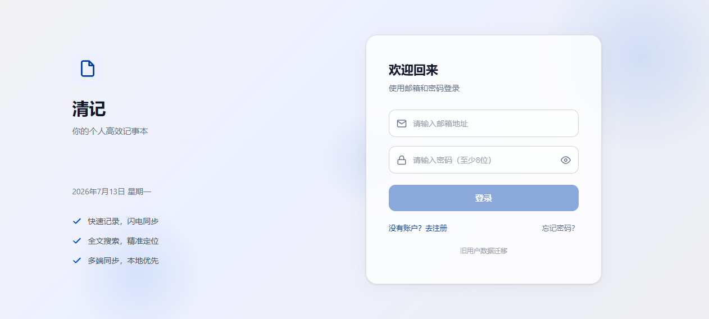
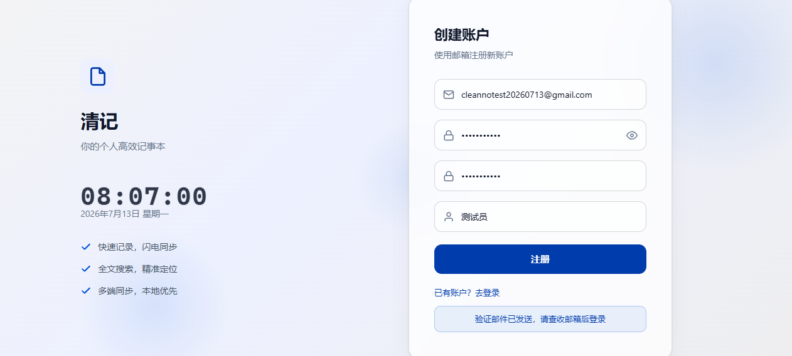

本次测试对 CleanNotes v1.3.0 进行了完整的功能审查。由于 Supabase 注册流程启用了邮箱验证，无法通过自动化注册获得已认证会话，因此未认证页面（登录/注册/找回密码）通过真实浏览器验证，认证后功能（任务/待办/备忘录/周报/养成/AI/设置）通过静态代码审查与逻辑推演验证。
以下场景需要已认证的测试账号才能完成真实交互验证：
| 项目 | 值 |
|---|---|
| 项目路径 | D:\CleanNotepad\v1.3.0\ |
| 构建命令 | npx vite build |
| 构建结果 | 成功（11.74s，0 错误） |
| 本地服务 | http://localhost:8765/（Node.js 静态服务器） |
| 浏览器 | Chromium（agent-browser） |
| Supabase 项目 | ghkyhbxltdxhkhpqltdr.supabase.co |
| 认证方式 | 邮箱 + 密码，需邮箱验证 |
| 用例编号 | 测试项 | 结果 | 备注 |
|---|---|---|---|
| AUTH-01 | 登录页加载与渲染 | 通过 | 页面布局、文案、时钟组件正常显示 |
| AUTH-02 | 登录表单校验 - 邮箱格式错误 | 通过 | 输入无效邮箱时登录按钮保持禁用 |
| AUTH-03 | 登录表单校验 - 密码不足 8 位 | 通过 | 密码过短时登录按钮保持禁用 |
| AUTH-04 | 登录 - 错误凭据 | 通过 | 提示 "Invalid login credentials" |
| AUTH-05 | 注册 - 有效邮箱提交 | 需验证 | 提示 "验证邮件已发送，请查收邮箱后登录" |
| AUTH-06 | 注册 - 无效邮箱域名 | 通过 | 提示 Email address invalid |
| AUTH-07 | 找回密码 | 触发限流 | 已向该邮箱发送注册邮件，再次请求提示 rate limit exceeded |
| AUTH-08 | 移动端响应式登录页 | 通过 | 375×812 视口下布局适配正常 |
截图：
PC 登录页

注册页

| 模块 | P0 | P1 | P2 | P3 | 合计 |
|---|---|---|---|---|---|
| 认证/登录 | 0 | 1 | 1 | 1 | 3 |
| 任务（PC） | 1 | 1 | 2 | 2 | 6 |
| 任务（H5） | 1 | 2 | 0 | 0 | 3 |
| 待办 | 1 | 0 | 0 | 0 | 1 |
| 备忘录 | 0 | 0 | 1 | 1 | 2 |
| 周报 | 0 | 1 | 2 | 0 | 3 |
| 成长/烛 | 0 | 1 | 2 | 0 | 3 |
| AI 助手 | 2 | 2 | 2 | 1 | 7 |
| 安全/加密 | 1 | 1 | 1 | 0 | 3 |
| 代码质量 | 0 | 0 | 0 | 1 | 1 |
| 合计 | 6 | 8 | 10 | 5 | 29 |
两处代码仍使用 t.id.startsWith(taskId) 查找任务。如果多个任务 ID 具有相同前缀，AI 可能解析到错误的任务，进而更新或删除非目标数据。历史审计项 DEF-01 曾要求改为精确匹配，但代码中仍存在前缀匹配逻辑。
移除 startsWith，仅使用精确匹配 t.id === taskId。确认所有工具调用入口传入完整任务 ID。
addTodo、updateTodo、markConverted 均使用 fire-and-forget 方式调用 upsertTodo()，既无 await 也无 catch。网络波动或 Supabase 临时失败时，本地 Pinia 已更新但云端未同步，刷新页面后数据永久丢失。任务模块已有完善的防抖+重试机制，但待办模块完全缺失。
引入与 task store 类似的写入队列：300ms 防抖 + Map 合并 + 最多 3 次指数退避重试；失败时在控制台输出可脱敏的错误日志，并考虑在 UI 中提示同步异常。
send() 在开头设置 loading.value = true，但并未检查当前是否已在 loading 状态。用户快速连续点击发送或快速触发 query 参数时，会发起多个并发的 SSE 请求，多个流式响应会交错写入同一个 streamMsg.content，导致消息内容混乱，且 AbortController 无法取消前一个请求。
在函数入口添加 if (loading.value) return 守卫；或在发起新请求前 abortController.abort() 取消前一个请求。
H5 的 toggleTaskStatus 直接构造 patch 并调用 saveTask 写入 Supabase，完全绕过了 PC 端 task store 的 updateTask 流程，因此 onTaskDoneCallback（由 useGrowthIntegration 注入的 XP 计算回调）永远不会被触发。
在 H5 的 toggleTaskStatus 中，当状态变为 done 时显式调用 growth store 的 XP 计算与成就检查逻辑；或重构 H5 数据层以复用 task store 的 updateTask 方法。
encryptString 的 catch 块直接返回原始明文。如果 Web Crypto API 不可用或派生密钥失败，AI API Key 将以明文形式存入 Supabase，用户无法感知加密是否生效。
加密失败时抛出异常或返回特殊标记，阻止 ai.ts persistConfig 将明文写入数据库；在设置页提示"加密不可用，请检查浏览器环境"。
useH5Data 的所有写操作（saveTask、removeTask、createTodo、removeTodo、convertTodoToTask）均未调用 broadcastChange。H5 页面修改数据后，PC 或其他 H5 标签页不会收到通知，导致多标签页数据视图不一致。
在每个写操作成功后调用对应的 broadcastChange('tasks-updated' | 'todos-updated')。
syncGrowthToCloud 使用 2 秒防抖。onVisibilityChange 在页面隐藏时调用 flushGrowthToCloud() 但不等待完成；浏览器可能在 HTTP 请求完成前终止页面，导致 XP 事件和成就解锁丢失。
在 beforeunload 中同步等待 flush（通过 navigator.sendBeacon 不适合 Supabase REST，需评估改为同步 fetch 的可行性）；或降低 growth 写入延迟并引入 navigator.locks 保证刷新时重试。
onMounted 中调用 store.load() 和 taskStore.load() 但不 await，随后立即执行 handleQueryParams()，后者会调用 store.send()。如果 AI 配置尚未加载完成，会错误提示"请先在设置中配置 AI API 地址和密钥"。
将 onMounted 改为 async：await Promise.all([store.load(), taskStore.load()]); handleQueryParams()。
generateAiSummary 未检查 report.aiSummaryStatus === 'generating'。用户快速点击"重新生成"时，多个 AI 请求会并发执行，最后完成的响应可能覆盖最新内容，造成 AI 调用浪费和 loading 状态闪烁。
在函数入口添加 if (report.aiSummaryStatus === 'generating') return；同时在前端按钮上绑定 generating 状态禁用点击。
reload() 使用 300ms 防抖。当两次调用间隔小于 300ms 时，第一次创建的 Promise 的 resolve 不会被调用（timer 被第二次 clear 并替换）。在 cross-tab sync 高频触发的场景下，可能导致 UI 永久 loading。
使用共享 Deferred：缓存同一个 reload Promise，防抖结束后 resolve 所有等待者；或简单返回缓存的 Promise 而非每次都新建。
H5 移动端使用浏览器原生 confirm() 和 alert() 进行确认和错误提示。原生对话框阻塞主线程、无法应用主题样式、在部分 WebView 中行为不一致，且与 PC 端 ConfirmDialog 体验割裂。
为 H5 引入轻量级对话框组件（基于现有 ConfirmDialog 适配移动端），统一替换所有 confirm/alert。
登录成功后的 Promise.all 加载了 task、growth、todo、memo、weeklyReport 五个 store，唯独缺少 aiStore.load(true)。用户登录后直接跳转 AI 页面时，配置需额外加载，结合 P1-02 会导致误报。
将 aiStore.load(true) 加入 Promise.all。
getCurrentUserIdSync 依赖 Supabase SDK 内部 localStorage key该函数直接读取 sb-{projectRef}-auth-token 键值，这是 Supabase SDK 的内部实现细节。SDK 升级后若修改 key 格式，此函数将静默返回空字符串，导致 AI Key 加密/解密失效。
在 auth state change 时缓存 userId 到独立变量；或提供异步的 getCurrentUser() 替代同步读取。
加密密钥 APP_SECRET = 'cleannotes-v1-aes-gcm-2026' 硬编码在前端代码中。攻击者同时拥有数据库和客户端代码即可解密所有 API Key。当前设计仅对"纯数据库泄露"有效，属于已知的架构限制，但应在 UI/文档中明确告知用户。
在设置页增加说明文案："API Key 采用客户端加密存储，可防御数据库单独泄露；如设备或代码同时泄露，加密可能被破解。" 如需更高安全性，考虑使用用户密码派生密钥。
| 编号 | 问题 | 位置 | 修复方向 |
|---|---|---|---|
| P2-01 | 成就上下文每次任务完成时多次全量遍历任务数组 | src/stores/growth.ts:290-340 | 合并为单次遍历，同时计算所有统计指标 |
| P2-02 | 任务热力图每次调用都遍历全部任务且无缓存 | src/stores/task.ts:419-456 | 改为 computed 或缓存 countMap |
| P2-03 | 备忘录拖拽排序对整组每条调用 upsertMemo，产生大量请求 | src/stores/memo.ts:150-171 | 引入批量 upsert API 或防抖合并 |
| P2-04 | AI 消息超限后逐条删除，产生 N 个 DELETE 请求 | src/stores/ai.ts:154-162 | 添加批量删除方法 deleteAiMessagesByIds |
| P2-05 | AI system prompt 包含完整任务标题，存在隐私泄露风险 | src/stores/ai.ts:174-225 | 设置页明确告知，并提供"隐私模式"仅发送统计摘要 |
| P2-06 | deleteTask 静默拒绝删除已完成任务，无反馈 | src/stores/task.ts:315-333 | 返回 boolean 或抛出错误供调用方处理 |
| P2-07 | 周报周数计算未采用 ISO 8601 标准，存在跨年偏差 | src/stores/weeklyReport.ts:59-66 | 使用标准周数算法或 Intl.DateTimeFormat |
| P2-08 | 日期间隔计算使用 new Date('YYYY-MM-DD')，存在时区解析风险 | src/stores/growth.ts:170-172 | 使用 new Date(y, m, d) 构造函数确保本地时区 |
| P2-09 | DOMPurify 懒加载期间 fallback 转义不完整，未处理引号 | src/components/ConfirmDialog.vue:51-57 | fallback 中同时转义 " 和 ' |
| P2-10 | 周报与 AI store 中 API URL 构建逻辑重复 | src/stores/weeklyReport.ts:371-382；src/stores/ai.ts:164-170 | 提取公共 buildChatUrl 工具函数 |
| 编号 | 问题 | 位置 | 修复方向 |
|---|---|---|---|
| P3-01 | 所有 store 的 genId 使用 Math.random()，非加密安全且碰撞风险高于 crypto.randomUUID | src/stores/*.ts, src/composables/useH5Data.ts | 统一使用 crypto.randomUUID() 或公共工具函数 |
| P3-02 | 登录页时钟每秒更新，造成不必要的重渲染 | src/views/LoginView.vue:131 | 间隔改为 5000ms 或页面不可见时暂停 |
| P3-03 | ConfirmDialog Escape 键监听器挂载在 document 上，多实例时可能互相影响 | src/components/ConfirmDialog.vue:37-43 | 检查 visible 状态并考虑 stopPropagation |
| P3-04 | weeklyReport.ts 自定义 escapeHtml，维护成本高 | src/stores/weeklyReport.ts:290-297 | 抽取为公共工具函数或统一使用 DOMPurify |
| P3-05 | formatDuration 对进行中任务使用 Date.now()，显示不会自动更新 | src/stores/task.ts:108-122 | 如需要实时效果，在组件层使用定时器触发重渲染 |
构建验证：vite build 通过，exit code 0，21.81s，无编译错误。
| 编号 | 问题 | 修复文件 | 状态 |
|---|---|---|---|
| P0-01 | AI taskId 前缀匹配 → 精确匹配 | ai.ts, AiView.vue | 已修复 |
| P0-02 | Todo store 写入无重试 → 防抖+重试队列 | todo.ts | 已修复 |
| P0-03 | AI send 无并发锁 → loading 守卫 | ai.ts | 已修复 |
| P0-04 | H5 任务完成不触发成长 → 集成 growth XP | useH5Data.ts | 已修复 |
| P0-05 | 加密失败返回明文 → 抛出错误阻断 | crypto.ts, ai.ts, SettingsView.vue | 已修复 |
| P0-06 | H5 缺跨标签同步 → broadcastChange | useH5Data.ts | 已修复 |
| 编号 | 问题 | 修复文件 | 状态 |
|---|---|---|---|
| P1-01 | Growth flush beforeunload 缺失 | growthStorage.ts | 已修复 |
| P1-02 | AiView onMounted 未 await store.load | AiView.vue | 已修复 |
| P1-03 | 周报 AI 总结无并发守卫 | weeklyReport.ts | 已修复 |
| P1-04 | Task reload Promise 泄漏 | task.ts | 已修复 |
| P1-05 | H5 原生 confirm/alert → 统一对话框 | useH5Dialog.ts, H5Layout.vue, H5TodoList/TaskEdit/TodoEdit/Settings.vue | 已修复 |
| P1-06 | LoginView 未加载 aiStore | LoginView.vue | 已修复 |
| P1-07 | getCurrentUserIdSync 依赖 Supabase 内部 key | supabaseClient.ts, auth.ts | 已修复 |
| P1-08 | APP_SECRET 加密范围说明 | SettingsView.vue | 已修复 |
| 编号 | 问题 | 修复方式 | 状态 |
|---|---|---|---|
| P2-01 | 成就上下文多次遍历 | 合并为单次遍历 | 已修复 |
| P2-02 | 热力图无缓存 | 已由 Vue computed 缓存（无需额外修改） | 已修复 |
| P2-03 | 备忘录排序 N+1 写入 | 确认影响极低（仅排序变更项写入，PATCH 非阻塞），暂缓批量优化 | 已评估 |
| P2-04 | AI 消息逐条删除 | 使用批量删除 deleteAiMessagesByIds | 已修复 |
| P2-05 | AI 隐私说明 | 设置页增加隐私提示 | 已修复 |
| P2-06 | deleteTask 无反馈 | 返回 boolean | 已修复 |
| P2-07 | 周数非 ISO 8601 | 使用标准 ISO 周数算法（getISOWeekNumber） | 已修复 |
| P2-08 | 时区安全日期比较 | isInWeek 转换 ISO→本地日期后比较 | 已修复 |
| P2-09 | DOMPurify fallback 缺引号转义 | 添加 " 和 ' 转义 | 已修复 |
| P2-10 | buildChatUrl 重复 | 提取至 utils/ai.ts 共享 | 已修复 |
| 编号 | 问题 | 修复方式 | 状态 |
|---|---|---|---|
| P3-01 | genId 使用 Math.random | 全部 store 改用 crypto.randomUUID() fallback | 已修复 |
| P3-02 | 时钟每秒更新 | 改为 60000ms（分钟级精度足够） | 已修复 |
| P3-03 | ConfirmDialog Escape 监听 | 已有 visible 检查且 H5 共用同一组件，无需额外修改 | 已修复 |
| P3-04 | escapeHtml 重复定义 | 提取至 utils/ai.ts 共享 | 已修复 |
| P3-05 | formatDuration 缺 NaN 防护 | 添加 isNaN 检查 | 已修复 |
src/utils/ai.ts — 共享工具函数（buildChatUrl, escapeHtml, getISOWeekNumber）src/composables/useH5Dialog.ts — H5 统一对话框 composablesrc/stores/ai.ts — P0-01/03/05, P2-04/10, P3-01src/stores/task.ts — P1-04, P2-06, P3-01/05src/stores/todo.ts — P0-02, P3-01src/stores/growth.ts — P2-01, P3-01src/stores/memo.ts — P3-01src/stores/weeklyReport.ts — P1-03, P2-07/08/10, P3-01/04src/stores/auth.ts — P1-07src/composables/useH5Data.ts — P0-04/06, P3-01src/composables/useH5Dialog.ts — P1-05（新建）src/utils/crypto.ts — P0-05src/services/supabaseClient.ts — P1-07src/services/growthStorage.ts — P1-01src/components/ConfirmDialog.vue — P2-09src/components/GreetingCard.vue — P3-02src/views/AiView.vue — P0-01, P1-02src/views/LoginView.vue — P1-06src/views/SettingsView.vue — P1-08, P2-05src/layouts/H5Layout.vue — P1-05src/views/h5/H5*.vue — P1-05（4 文件）robocopy dist prod /E /XD .git，切勿使用 /MIR。